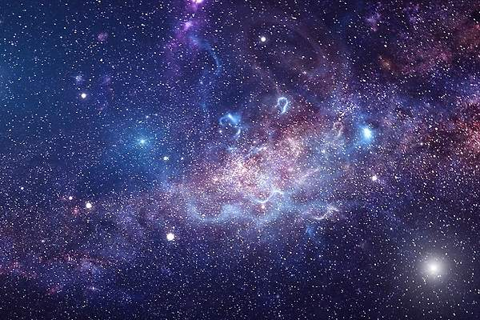

EL UNIVERSO

CONCEPTO
También se le llama Cosmos. Las ciencias que lo estudian son varias, en especial dos: la astronomía y la cosmología.El Universo es muy grande, pero quizás no infinito. Si lo fuera, habría infinita materia en infinitas estrellas, y no es así. Al contrario: en cuanto a la materia es, sobre todo, espacio vacío. Hay quien incluso afirma que el Universo en el que vivimos no es real, que es un holograma.
Temperaturas del Universo, de frío (azul) a caliente (rojo)
El Universo conocido contiene galaxias, cúmulos de galaxias y estructuras de mayor tamaño llamadas supercúmulos, además de materia intergaláctica. Todavía no sabemos con exactitud su magnitud, a pesar de la avanzada tecnología disponible en la actualidad .
La materia no se distribuye de manera uniforme, sino que se concentra en lugares concretos: galaxias, estrellas, planetas... Sin embargo, se supone que el 90% de lo que existe es una masa oscura, que no podemos observar.
El Universo es todo lo que podemos tocar, sentir, percibir, medir o detectar. Abarca los cosas vivas, los planetas, las estrellas, las galaxias, las nubes de polvo, la luz e incluso el tiempo. Antes de que naciera el Universo, no existían el tiempo, el espacio ni la materia.
El Universo contiene miles de millones de galaxias, cada una con millones o miles de millones de estrellas. El espacio entre las estrellas y las galaxias está en gran parte vacío. No obstante, incluso en sitios alejados de las estrellas y los planetas hay partículas dispersas de polvo o unos pocos átomos de hidrógeno por centímetro cúbico. El espacio también está lleno de radiación (por ejemplo, luz y calor), campos magnéticos y partículas de alta energía (como los rayos cósmicos).
Historia
La mayoría de los astrónomos cree que el Universo comenzó con un Big Bang, hace alrededor de 14 billones de años. En ese momento, todo el Universo se encontraba en el interior de una burbuja mil veces más pequeña que la aguja de un alfiler. Era más caliente y densa que cualquier cosa que nos podamos imaginar.
Luego explotó de pronto. Había nacido el Universo que conocemos. El tiempo, el espacio y la materia comenzaron con el Big Bang. En una fracción de segundo, el Universo pasó de ser más pequeño que un átomo a ser más grande que una galaxia. Y continuó creciendo a una velocidad impensable. Todavía hoy se encuentra en expansión.
A medida que el Universo se expandía y enfriaba, la energía se convertía en partículas de materia y antimateria. Estos dos tipos opuestos de partículas se destruyeron entre sí casi por completo. Pero algo de materia sobrevivió. Cuando el Universo tenía un segundo de edad, se comenzaron a formar partículas más estables, llamadas protones y neutrones.
En los tres minutos que siguieron, la temperatura cayó por debajo de 1 billón de grados Celsius siendo entonces lo suficientemente templada como para que los protones y neutrones se unieran, formando núcleos de hidrógeno y helio.